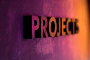

WHO IS DR.WAKOLI DAVID?
Introduction
Welcome to the "Empowering Education" blog, a virtual space curated by Dr. David Wafula Wakoli a passionate author dedicated to reshaping the landscape of school books. This blog serves as a vibrant hub where educational innovation and thoughtful insights converge to breathe new life into the realm of academia. As a seasoned author with a profound understanding of the evolving educational landscape, Dr.David Wafula Wakoli endeavors to redefine the narrative surrounding academic books in the area of Early Childhood and Special Needs Education. Our blog is not merely a collection of words; it's a journey into the heart of pedagogy, an exploration of the transformative power inherent in the written word. This are schorlaly Researched Material that aligns with 21st Century skill & knowledge.
Profile Overview:
Dr. David W. Wakoli holds a PHD from Northwestern Christian University,Florida USA.,in curriculum Dvelopment and Instructions and M.Ed, and B.Ed from Moi University Eldoret Kenya.
Key Highlights:
He is also the author of 7 Academic Scholarly Books in the area of "special Needs Education".He has also written 15 articles that are being published in a reputable Journal.
Join the Journey:
Whether you are an educator seeking inspiration, a curriculum developer exploring new approaches, or a parent invested in your child's education, consider this blog your gateway to the educational odyssey crafted by Dr.Wakoli David. Together, let's embark on a journey that shapes the future of learning. Prepare to be inspired. Welcome to the educational odyssey of Dr. David W. Wakoli. 